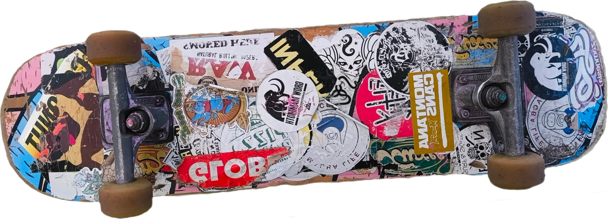

Exercici 16_29. Traducció de C a Do
Exercici 16_29. Traducció de C a Do
Context
Carpeta de lliurament:
16_29_c2do/Continguts relacionats: Toca modular
Com lliurar-lo: instruccions
[☆] Exercici amb dificultat addicional
[✓] Exercici amb autoavaluació
Enunciat
Entre les aficions de la nostra amiga Kiara[1] està la de descobrir com tocar peces musicals a partir de les notes de la seva melodia.
Hi ha dues maneres principals per referir-se a les notes musicals en occident: la notació llatina i l'anglosaxona.
Aquesta és la relació:
Llatina |
Anglosaxona |
Do |
C |
Re |
D |
Mi |
E |
Fa |
F |
Sol |
G |
La |
A |
Si |
B |
Tot i que la nostra amiga no té cap problema de llegir les notes en qualsevol de les notacions, el cert és que li resulta molt més agradable treballar amb la notació llatina, amb la que va aprendre de petita.
Una altra de les seves aficions és la programació, així que ha decidit fer un programa que li faci la conversió de la notació anglosaxona a la llatina.
El programa rep un text per entrada estàndard i canvia tot el que sembla una nota anglosaxona a una de llatina.
Per considerar una nota anglosaxona, el programa considera que:
Ha de ser una de les set lletres, de la 'A' a la 'G'.
La lletra ha d'aparèixer en majúscules.
Immediatament abans de la lletra no pot haver-hi cap lletra, número ni el caràcter '#'. Pot no haver-hi res si és el primer caràcter del String.
Després de la lletra, la cosa es complica una mica:
Pot no haver-hi res (s'ha acabat el String)
Pot haver-hi un número del 0 al 8.
Totes les notes, excepte B (Si) i E (Mi) poden estar seguides del modificador '#'.
Totes les notes, excepte C (Do) i F (Fa) poden estar seguides del modificador 'b'.
En cas que la nota aparegui seguida d'un modificador, encara pot estar seguit d'un número del 0 al 8.
Tant si finalitza amb la lletra, com si finalitza amb el '#' o 'b', com si ho fa amb un dels números, a continuació només pot haver-hi, o bé res, per què acaba el string, o bé un blanc, o bé un caràcter que no sigui ni lletra, ni número, ni '#'.[2]
La música pot ser molt maca però no és necessàriament fàcil, oi?
Alguns exemples de notes vàlides:
"C" és la nota natural que en notació llatina es tradueix com a "Do"
"F#" és un "Fa" sostingut
"Bb" és un "Si" bemoll, o "Sib"
"C4" és el "Do" central d'un piano, o "Do4"
"F#5" és el "Fa" sostingut de la cinquena octava, o "Fa#5"
Per exemple, la frase:
"L'acord en C major està format per les notes C, E i G."
seria convertida a:
"L'acord en Do major està format per les notes Do, Mi i Sol."
A la nostra amiga li ha agradat molt fer aquest programa i m'ha recomanat que te l'ofereixi com a exercici perquè també tu practiquis.
Què has de fer?
Desenvolupa un lloro que vagi acceptant frases i que vagi convertint les notes anglosaxones a notació llatina.
Perquè el teu programa passi totes les proves, caldrà que la teva solució
inclogui la funció String tradueixCDo(String) que, donat un text amb
possibles notes anglosaxones, retorni el text amb les notes reemplaçades per la
seva versió llatina.
Anomena el programa TraductorCDo.
Alguna recomanació/pista
Per aquest exercici, si et cal, pots fer servir la utilitat
String.substring().
De ben segur que no voldràs quedar-te només amb la funció tradueixCDo().
Per si et serveix de referència, la meva solució té més de 6 mòduls, alguns
simplement permeten saber si un caràcter és o no una lletra vàlida per una nota
en notació anglosaxona.
Footnotes
{kind=link}
